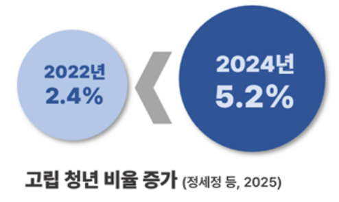
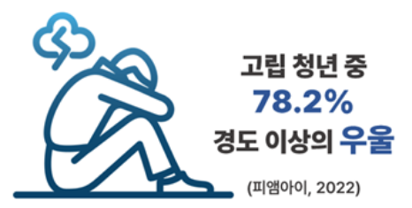
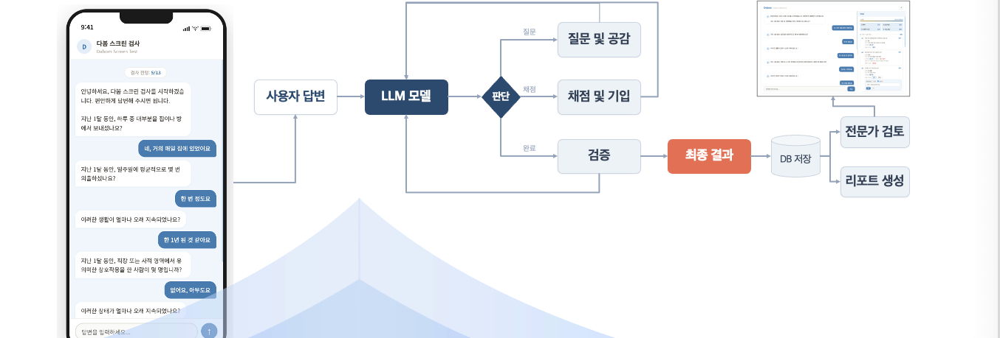

← → · Space · 스크롤
taoreunda.github.io/talk
2026 세계인문사회학술대회 · 소버린 AI
사회적 고립의 측정과 예측
고전적 심리평가와 AI기반 평가
Measuring and Predicting Social Isolation:
Classical Psychological Assessment versus AI-Based Assessment
마음건강케이유
2026. 7. 2.(목)
온안국
01
배경
청년 사회적 고립의 확산

2년 새 2배
증가
고립 청년 5.2% (2024)

고립 청년
0.0%
경도 이상 우울
0.0%
자살 사고 경험
그중
0.0%
자살 시도
정세정 등(2025) · 피앤아이(2022) · 김성아 등(2023)
02
배경
고립의 원인: 구조적·심리적 요인
구조적 요인
(사회·환경)
불안정 고용·장시간 노동 → 소진·관계 단절
취업 지연·경제 공백 → 대인관계 축소
졸업·실업·지역 이동 → 소속 집단 상실
심리적 요인
(개인 경험·기질)
아동기 부정적 경험·정서조절 곤란 → 사회적 회피
노가빈(2021) · 유민상(2021) · 조미형·고아라(2022) · Elliott(2005)
03
배경
고립은 자살 위험으로 이어진다
한국 자살률
OECD 1위
· 청년 사망원인 1위
고립 청년은 일반 청년보다
자살 고위험군
고립 청년의
75.4%
자살 사고,
26.7%
자살 시도
위기에도 도움 요청·서비스 이용 제한적 →
조기 포착 어려움
통계청(2024) · Baek & Yoon(2025) · 김성아(2023) · Fong & Yip(2023)
04
해법
평가와 효율적 개입
자살 위험으로 이어지므로, 핵심은 위험군을
미리 식별
하는 것
현행 체계는 위험이 드러난 뒤 대응하는
반응적·사후
구조
위험이 표면화되기 전에 선제적으로 가려낼
선별 체계
가 필요
한정된 인적 자원 → 평가로 위험 수준을 가려 효율적으로 개입
05
해법
고전 심리평가의 두 방식: 척도 vs 면담
자기보고식 척도
예: PHQ-9, CES-D
간편함,
표준화
한계: 고정 문항, 이해를 잘못하고 응답, 맥락 생략
구조화된 면담
임상가가 직접 묻고 맥락을 판단
맥락을 판단하고 모호하면 되물음 → 깊이 있는 평가
한계: 전문가 인력 필요, 실시간·대규모 대응 어려움
→ 척도 =
표준화된 정량
· 면접 =
임상가의 맥락적 판단
Teo et al.(2018)
06
해법
자기보고식 척도 vs 구조화된 면담
예시로 보는 두 방식
자기보고식 우울 척도 · PHQ-9
지난 2주간, 다음 문제로 얼마나 자주 불편했나요?
Q1. 일이나 여가 활동에 흥미·즐거움을 느끼지 못한다
0
전혀
아님
1
며칠
동안
2
일주일
이상
3
거의
매일
Q2. 기분이 가라앉거나 우울하거나 희망이 없다고 느낀다
0
전혀
아님
1
며칠
동안
2
일주일
이상
3
거의
매일
구조화 면접 · 우리 시스템
요즘 하루를 주로 어디서 보내세요?
그냥 집에요… 가끔 편의점 정도?
약속이나 외출은 한 주에 몇 번쯤?
거의 없어요. 작년 여름부터요.
07
시스템
면담을 LLM으로, 왜 적합한가
구조화 면담
은 사람이 해도 정해진 질문·순서·채점 기준에 맞춰 정형 결과를 내는
프로토콜 과제
표준화·반복·구조화
출력 →
최근 LLM이 잘하고 있음
전문가 인력 부족
을 LLM으로 보완 (24시간·비대면·동시 다수)
Boucher(2021) · Ferretti(2023) · Wies(2021)
08
시스템
Structured Output
구조화된 답변
Boucher 2021 · Ferretti 2023 · Wies 2021
면접관
요즘 하루를 주로 어디서 보내세요?
사용자
그냥 집에요… 가끔 편의점 정도?
면접관 · 되묻기
약속이나 외출은 한 주에 몇 번쯤?
사용자
거의 없어요. 작년 여름부터요.
LLM 해석
scorecard_tool — 항상 같은 형식의 평가 기록
scorecard_tool
(
action
=
"record"
,
question_id
=
"A1"
,
# 물리적 고립
status
=
"positive"
,
# 충족
value
=
"집에 대부분 체류, 외출 거의 없음"
,
rationale
=
"작년 여름부터 알바 외 외출 없음"
,
)
09
시스템
시스템 구조 — LLM을 답변과 채점으로 분리
LLM이
답변(대화)
하는 곳과
채점(평가)
하는 곳은 다르다.
질문
입력
평가 문항
LLM
답변
대화 · 되묻기
서로 다른 역할
채점
답변 평가 · 기입
리포트
생성
결과 정리
전문가
검토·확정
사람
10
시스템
LLM을 규칙 기반으로 통제
구조화된 채점 방식에 규칙 기반을 도입
Kato et al. 2019 · Teo et al. 2018
히키코모리 = A + B + C + D
사회적 고립 = B + C + D
B
관계 단절
C
지지 부재
D
고통·기능 손상
A
물리적 고립
공간적 은둔
일반
기준 미충족
조기종료 — 규칙이 흐름을 통제
A · B · C 모두 미충족
→ 시스템이 즉시
'일반'
으로 종료 · 남은 질문 건너뜀
LLM에게 "멈춰"라 지시하는 게 아니라 — 규칙이 판정 → 시스템이 종료를 강제
11
시스템
실제 작동 흐름: 대화 → 판정 → 전문가 검토

▶ 라이브 데모
이미지 클릭 → 실제 시스템 · 사용자 답변 → LLM 판단 → 채점·기입 → 검증 → DB 저장 → 전문가 검토
12
결론
결론 — AI에서 역할을 나눈다
무엇을
LLM에 · 규칙에 · 사람에
맡길지, 과제에 맞게 나눈다
LLM
채점
답변
가벼운 공감
해석
유연성이 필요한 언어·판단
규칙 기반
구조화된 채점의 순서
중단
분류
일관성·재현성이 필요한 통제
사람
최종 검토
확정
참조
책임·신뢰가 필요한 결정
13
향후
소버린 AI
민감한 데이터를 기관 안에서 다룬다
채점 능력 ↑
핵심 태스크는
파인튜닝
으로 특화·강화
간단한 답변
작은 모델
로 경량 처리
→ 특정 태스크는
기관 내에서 충분히 관리
· 민감 데이터를 외부로 내보내지 않는다
핵심
기관이 원하는
용도에 맞게 파인튜닝
이 필요할 것으로 생각됨
감사합니다
LLM과 사람의
역할을 나누는 것
이 중요
참고문헌
국문
김성아 등(2023). 고립·은둔 청년 실태조사 연구. 한국보건사회연구원.
노가빈·이소민·김제희(2021). 청년 은둔형 외톨이의 경험과 발생원인. 한국사회복지학, 73(2).
유민상·신동훈·이민정(2021). 청년의 사회적 고립 실태 및 지원 방안. 한국청소년정책연구원.
정세정 등(2025). 2024년 청년 삶 실태조사. 한국보건사회연구원.
조미형·고아라(2022). 사회적 고립 청년은 누구인가? 한국사회복지학, 74(4).
통계청(2024). 2023년 사망원인통계 결과.
피앤아이(2022). 서울시 고립·은둔 청년 실태조사 결과 보고서. 서울특별시.
영문
Baek & Yoon (2025). Prolonged social withdrawal... J Affect Disord, 381.
Boucher et al. (2021). AI chatbots in digital mental health. Expert Rev Med Devices, 18.
Choi et al. (2025). Unmet Health Care Use Among Socially Withdrawn Youth. JMIR.
Elliott et al. (2005). Child physical abuse and self-perceived isolation. J Interpers Violence, 20.
Ferretti et al. (2023). Global youth perspectives on digital health. BMC Digit Health, 1.
Fong & Yip (2023). Prevalence of hikikomori... Int J Soc Psychiatry, 69.
Holt-Lunstad et al. (2015). Loneliness and social isolation as risk factors. Perspect Psychol Sci, 10.
Kato, Kanba & Teo (2019). Hikikomori: Multidimensional understanding. Psychiatry Clin Neurosci, 73.
Teo et al. (2018). The 25-item Hikikomori Questionnaire (HQ-25). Psychiatry Clin Neurosci, 72.
Wies, Landers & Ienca (2021). Digital mental health for young people. Front Digit Health, 3.